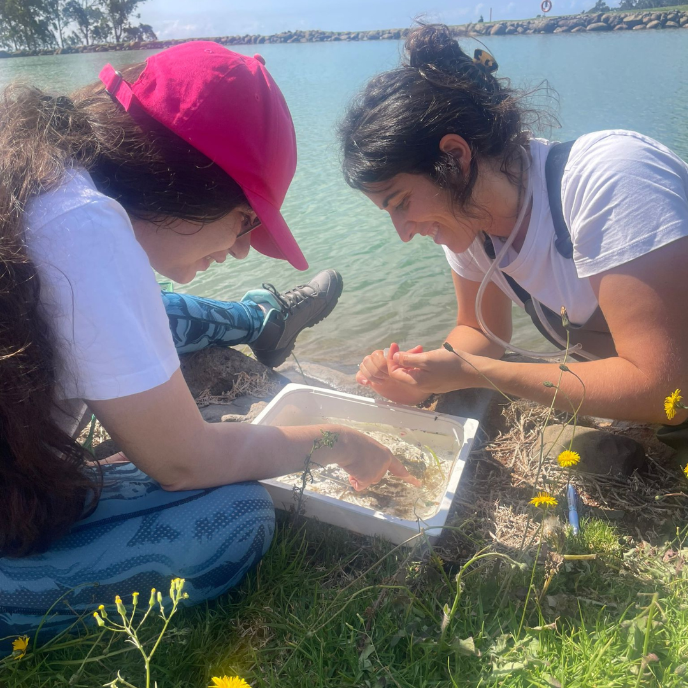
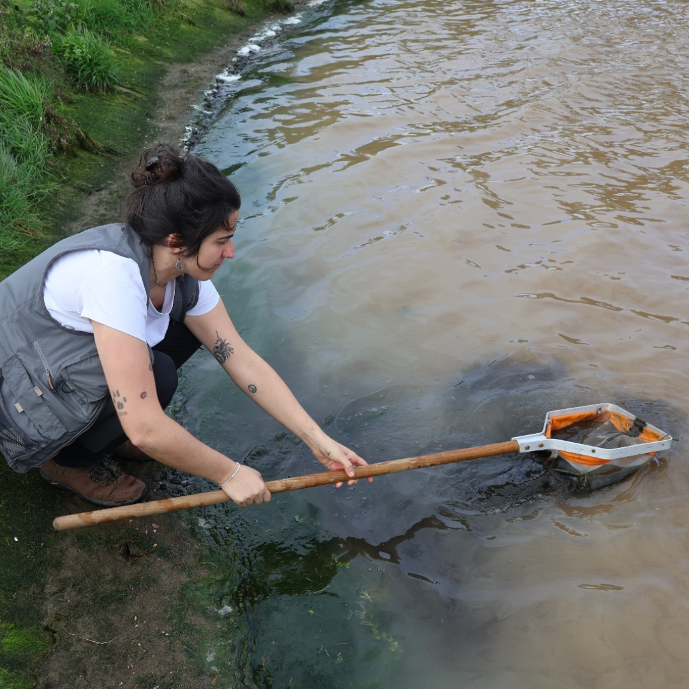
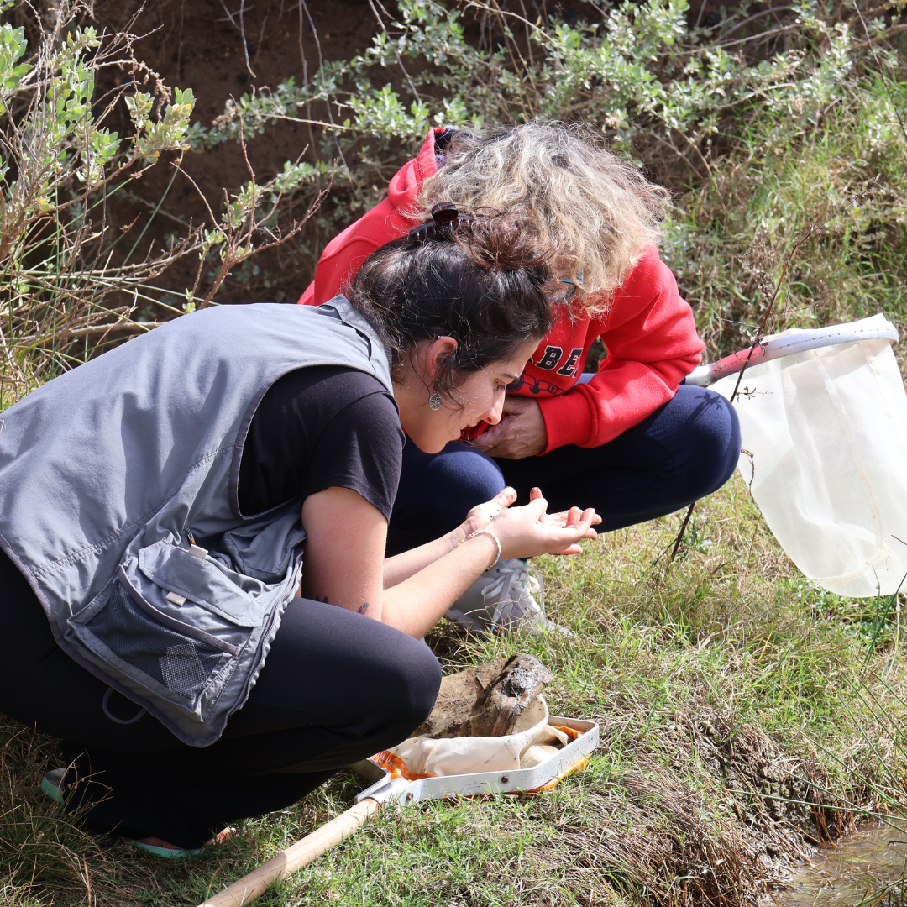
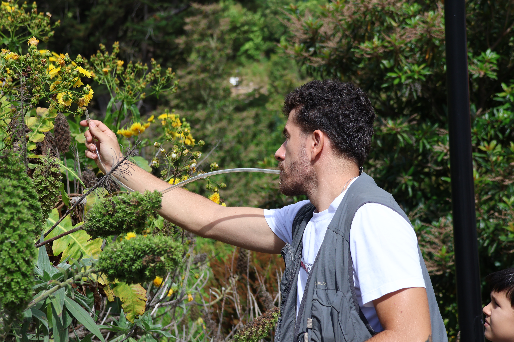
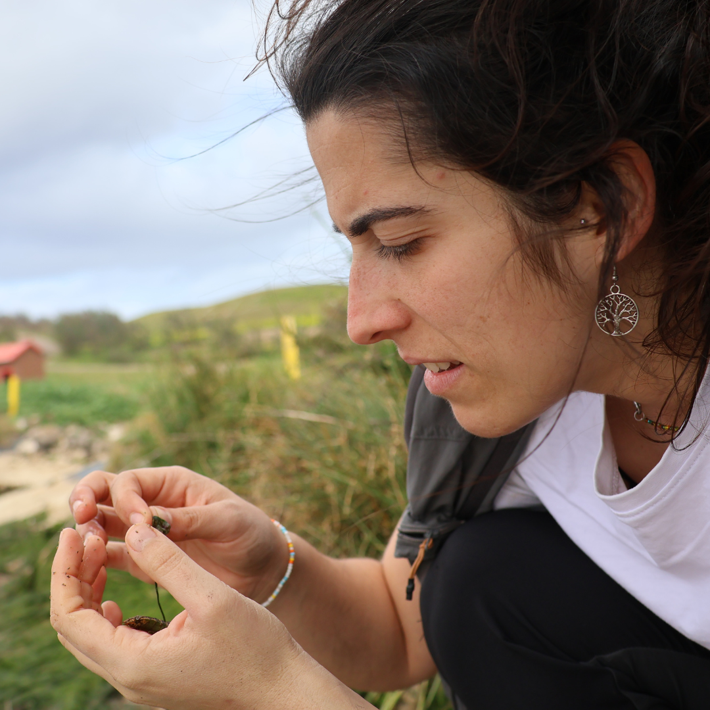

Investigar no Terreno
Utilizamos técnicas diversificadas de colheita, desde armadilhas pitfall a redes de varrimento e aspiração, garantindo um inventário rigoroso da fauna terrestre do arquipélago.
Galeria de Expedições

Lugar onde foi encontrada e nome da espécie

Lugar onde foi encontrada e nome da espécie

Lugar onde foi encontrada e nome da espécie

Lugar onde foi encontrada e nome da espécie

Lugar onde foi encontrada e nome da espécie

Lugar onde foi encontrada e nome da espécie

Lugar onde foi encontrada e nome da espécie

Lugar onde foi encontrada e nome da espécie
Mapa Interativo — Locais das Observações
Adicionar novo local:
Destaques das Saídas de Campo
Esta coleção abrange uma área geográfica vasta que compreende os arquipélagos da Madeira e Açores, bem como algumas localidades de Portugal Continental.
Através das expedições contínuas, os nossos investigadores monitorizam o estado das populações de insetos, identificam espécies exóticas e salvaguardam dados essenciais sobre a biodiversidade insular.
Progresso de Digitalização
Atualizado a 29 de julho de 2025